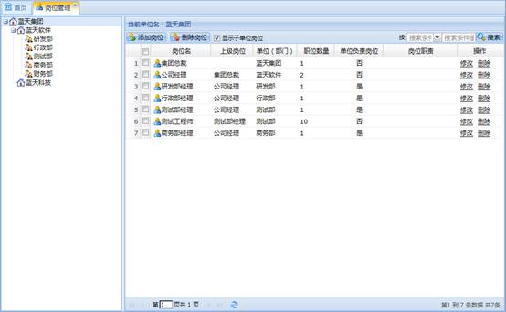

岗位管理负责组织和管理单位的岗位信息，包括增删改岗位，设置岗位间的关系等。
在系统菜单里选择岗位管理，工作区会显示岗位管理模块信息。工作区左边显示的是单位目录，右边显示岗位列表区，岗位列表区上面是工具栏，如下图所示：

图 岗位管理
1、添加岗位
在单位目录中选择一个单位，通过单位目录右键菜单的“添加岗位”或岗位列表工具栏的“添加岗位”按钮或岗位列表右键菜单“添加岗位”添加。
2、修改岗位
在岗位列表中选择一个要修改的岗位，通过岗位列表右键菜单的“修改岗位”或岗位列表操作区的“修改”修改。
3、删除岗位
（1）删除一个岗位：在岗位列表中选择一个要删除的岗位，通过岗位列表右键菜单的“删除岗位”或岗位列表操作区的“删除”删除。
（2）批量删除岗位：在岗位列表中选择多个要删除的岗位，通过工具栏的“删除岗位”按钮删除。
可通过复制已存在岗位的方式添加岗位，如下图所示：
图 复制岗位
可通过将一个单位（部门）的岗位移到其他单位（部门）中，如下图所示：
图 移动岗位
在单位列表中选择一个单位，岗位列表中显示相应的岗位，在岗位列表工具栏选择“搜索条件”，填写“搜索条件值”，最后选择“搜索”按钮搜索。